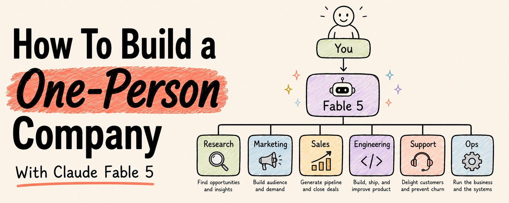
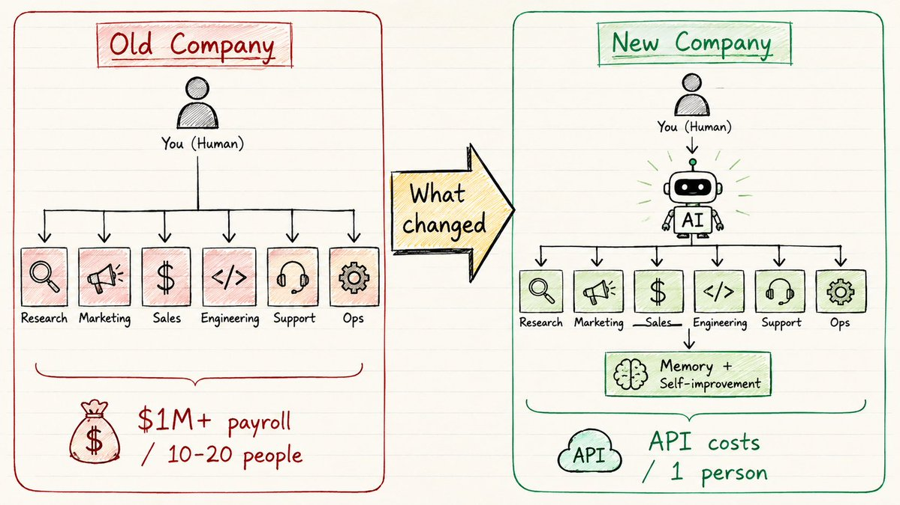
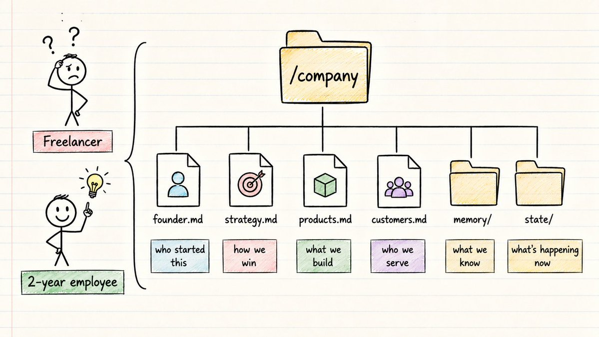
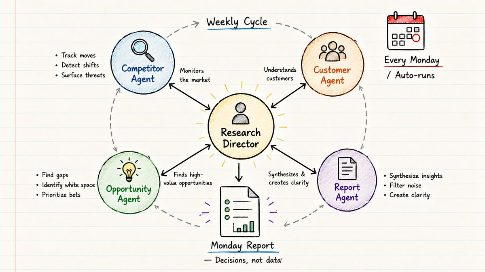
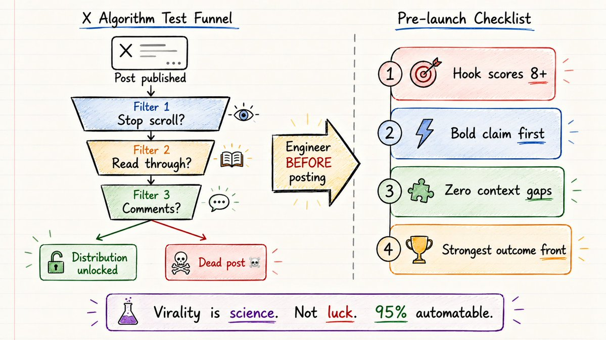
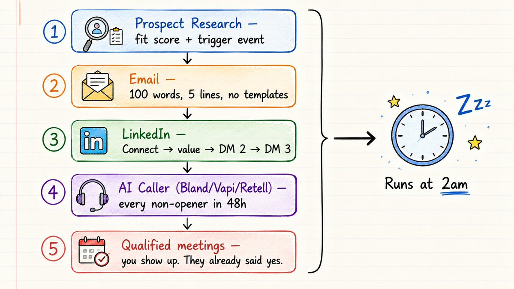
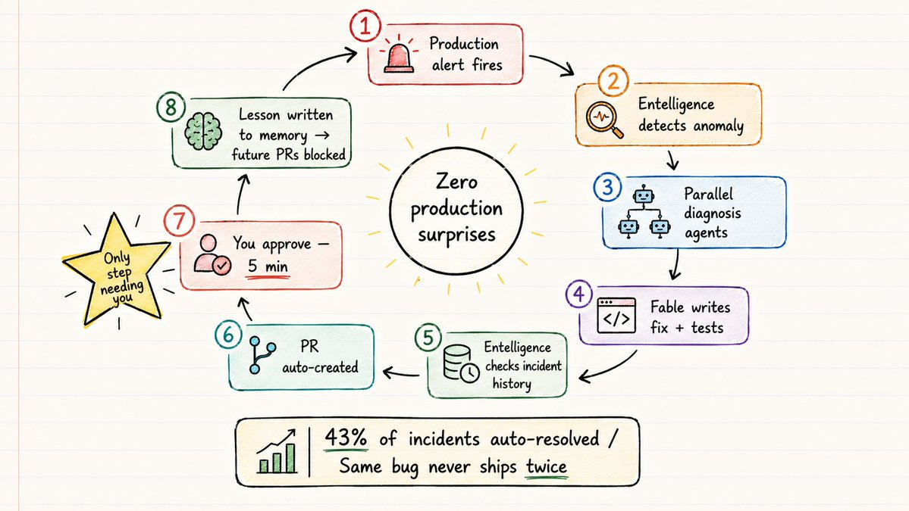
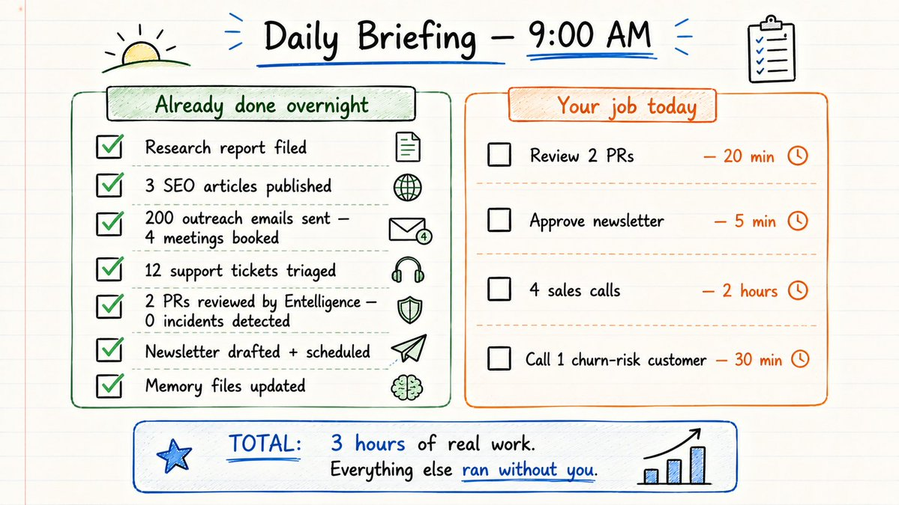
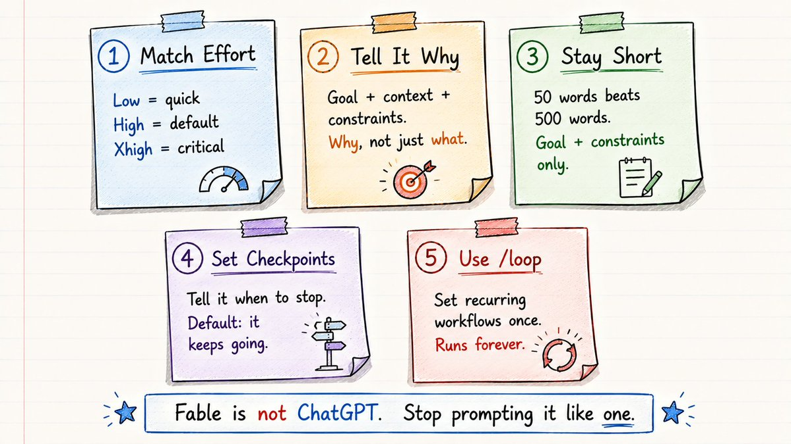

用 Claude Fable 5 搭一家一人公司
How To Build a One-Person Company — Rahul 的 20 个 prompt 完整中文解读
五年前搭一家公司要 10–20 人。Claude Fable 5 之后,一人公司有了操作系统 —— 本文把 Rahul 整篇长文的 20 个 prompt 翻译 + 拆解给你,今晚就能搭起来。

原文封面 · Rahul (@sairahul1) · 2026/07/02
五年前,你要搭一家真正的公司,你需要一支团队。
营销。研究。开发。销售。客服。
就算一家小公司,也要 10–20 人,人力成本 100 万美元以上。
这一切都变了。
Claude Fable 5 是我用过的第一个不像 chatbot 的 AI 模型。
它更像基础设施。
大多数人还在这样用它:
Prompt → Response → Done
那不是 Fable 该有的用法。
Fable 可以连续跑几天。
它会规划、研究、执行、验证、学习,继续跑下去。
最大的机会不是用 AI 省几分钟。
是用 AI 替代整个部门。
下面是一家我从零开始会搭的公司架构 —— 每一条都是真的。
下面的每一个 prompt 都是复制即用。今晚就跑起来。
The old model vs the new model
你 → 招人 → 管人 → 发工资 → 祈祷它能跑通
你 → 设计系统 → Fable 跑各部门 → 部门自己迭代
创始人不再亲手做。
创始人设计操作系统。
其余一切自动运转。

原文配图 · 旧模式 vs 新模式对比 · 你 → 设计系统 → Fable 跑各部门 · Rahul (@sairahul1) · 2026/07/02
Step 0 — Build the company brain first
每个创始人都会跳过这一步。
他们直接跳到写 prompt,然后奇怪为什么 AI 像个啥也不懂的新人。
新人变熟手的差别就是上下文。
现在建这个目录结构:
用下面的模板填每个文件:
founder.md — 创始人档案模板
strategy.md — 公司战略模板
customers.md — 客户情报模板
在每个 Fable session 开始时加这条指令:
没有这些文件:AI 像个拿到冷 brief 的 freelancer。
有了这些文件:AI 像个跟你共事两年的同事。

原文配图 · 公司大脑 · 七个 markdown 文件夹 = Fable 的上下文 · Rahul (@sairahul1) · 2026/07/02
Department 1 — Research
大多数创始人做 15 分钟 Google,管它叫市场调研。
这就是大多数产品错过市场的原因。
你的研究部门每周自动跑,不需要你管。
复制这条 prompt,每个周一跑一次:
你每个周一都会拿到一份战略报告。
不是信息,是决策。

原文配图 · Research 部门 · 每周一自动产出战略报告 · Rahul (@sairahul1) · 2026/07/02
Department 2 — Marketing
Part A · X 平台的病毒式发布工程
病毒式传播不是运气。
它是一套可复制的科学,95% 可以自动化。
X 算法的真相是这样的:
每条推文先投到一个小样本里测。
算法精确测量三件事:→ 用户停没停下滑?→ 他们有没有读到结尾?→ 他们有没有评论?
三件都过 → 推文进更大的池子 → 再过 → 解锁分发。
任何一件没过 → 推文 20 分钟内死亡,内容好不好都不重要。
这意味着每条推文在发布前必须经过工程化处理。
复制这条,每次发布前跑一次:
发完之后 — 60 分钟内保持在线。要做这些:
每一条评论都要用新信息回复。
永远不要只回「说得好!」— 要加东西。
60 分钟后走开。剩下的算法会搞定。
Part B · SEO 内容工厂
复制这条,每个目标关键词都用:
Part C · 全自动 Newsletter
同理,Fable 也能用来自动化 TikTok、Facebook、Instagram、LinkedIn。问它就行。

原文配图 · Marketing · X 算法三件事 + SEO + Newsletter 三线并行 · Rahul (@sairahul1) · 2026/07/02
Department 3 — Sales
大多数创始人以为销售就是 cold email。
Cold email 只占销售的 5%。
复制完整机器:
AI 通话层 — 在上面叠加这一层
把 Bland.ai / Vapi / Retell 接到你的 prospect 列表(最近 X 也出了 AI Voice SDK)
48 小时内没开邮件的 prospect,都会接到一个电话。
AI agent:→ 用客户公司名打招呼 → 提一下你研究出来的具体痛点 → 约 10 分钟,不是卖 → 直接通过 Cal.com 或 Calendly 写入你的日历 → 自动更新 CRM,记录通话结果
配置一次。 它会边睡边跑。
每天早上你的日历都多了几个新会议。

原文配图 · Sales · Cold email + LinkedIn + AI 通话 + CRM 完整漏斗 · Rahul (@sairahul1) · 2026/07/02
Department 4 — Engineering
这是「一人公司」真正变得不公平的地方。
Stripe 把自己的 Ruby 代码库交给 Fable 5。5000 万行。完整迁移。
正常情况下一整个团队要两个月。
Fable 一天搞定。
但对 solo founder 来说,日常工程不是大迁移。
是 bug、feature、PR、test。
真正杀死大多数 solo founder 的不是缺工程能力。
是 bug 上线了却没人发现。
付款流程跑挂了。API 静默失败。边界输入 crash。
你周一才会知道,那时候客户已经在骂了。
下面这套方法能彻底解决。
Layer 1 · Fable 当你的工程团队
Layer 2 · Entelligence — bug 在你发现之前就被修掉
这是大多数 solo founder 没有的部分。这是有没有区别:晚上睡得安不安,凌晨两点 Slack 是不是叫。
没有它的问题是这样的:
一个 PR 上线。它包含的模式跟 6 个月前一次 incident 一模一样。
没人发现,因为没人记得。
bug 周五打到 production。
你周一从愤怒的客户那里才知道。
Entelligence 是一个 production reliability 引擎,接你的整套栈 — GitHub、Sentry、PagerDuty、Linear、Datadog — 它会建一份 codebase 历史上每次 incident 的记忆。
每个 PR 都会自动对照那份 incident 历史被 review。
如果一次改动匹配了过去引发过事故的模式,Entelligence 会标出来,直接引那次 incident 的记录。
它会引那次 incident。它会显示那次怎么修的。它会防止重蹈覆辙。
它引用 incident。它显示修复。它阻止重复。
数据来自 100 万+ PR、2400+ 家公司:
→ AI 编程的每一美元里有 $0.44 拿去修 bug → $0.27 拿去返工 → 只有 $0.18 真的到 production
用了 Entelligence 的团队把这个数字从 $0.18 提到了 $0.41 到 production。
43% 的 incident 自动解决。每个季度拦下 61 个反复出现的 bug。
对一人公司来说:你扛不住周五晚上的 production 宕机。
Entelligence 就是那个永不睡觉、记得每次 incident、review 每个 PR 的资深工程师。
20 分钟接好 Entelligence:
Bug 全自动生命周期:
你再也不会半夜被 broken production 叫醒。
你再也不会付两次钱修同一个 bug。

原文配图 · Engineering · Fable + Entelligence 把 incident 拦在周五前 · Rahul (@sairahul1) · 2026/07/02
Department 5 — Support
客服是 solo founder 悄悄失血的地方。
工单堆积。客户流失。没人注意到,直到收入下降。
流失预警扫描是那笔能回本的关键。
大多数公司都是在客户取消之后才知道要流失了。
你的公司会比它早三周知道。
Department 6 — Operations
最被低估的部门。杠杆最高。
每日 9 点简报 — 每天早上自动跑:

原文配图 · Operations · 每日 9 点简报让你用 2 分钟知道今天做什么 · Rahul (@sairahul1) · 2026/07/02
2 layers that make this compound
Verification layer(验证层)
大多数人搭的流程是:Task → Output → Done
你搭的是:Task → Output → Verify → Fix → Done
在每个部门的 prompt 里都加上这条:
Memory layer(记忆层)— 真正的护城河
不是你的 prompts。不是你的 tools。是你的 memory。
每个部门都已经写到 ~/company/memory/。
一次性加上这条元指令:
系统每周都在变聪明,你不需要额外做什么。
5 Fable prompting rules that change everything
大多数人用 Fable 像用 ChatGPT。
这就是大多数人结果平庸的原因。
Rule 1 · 让投入匹配任务
→ Low/medium:快速回答、改写、简单查询 → High:任何重要的事都用这个档位 → Xhigh:最难的题、复杂构建、质量不可谈 → /loop:你再也不想手动启动的循环流程
Rule 2 · 告诉它为什么,不只是做什么
Rule 3 · 短胜过长
过度 prompting 会限制 Fable。
给它目标和约束,让它自己决定方法。
如果你写 500 字的 prompt 处理 50 字就能搞定的事,500 字版本通常更差。
Rule 4 · 明确设好 checkpoint
没有这条:Fable 动不动就问你。有了这条:它直接跑。
Rule 5 · 一切循环的事都用 /loop
设一次。永远在跑。

原文配图 · 5 条规则 · 短胜过长、checkpoint、/loop 是杠杆最高的 · Rahul (@sairahul1) · 2026/07/02
The implementation order
不要六个部门同时搭。
按这个顺序搭。每一层解锁下一层。
Week 1 — Foundation(2 小时)建公司大脑目录,填好 5 个模板。所有其他东西都从这里读起。少了这一步,其他一切都不正常。
Week 2 — Research 部门(1 小时接入)复制 Research Director prompt,手动跑第一轮每周研究。周一:你拿到第一份战略报告。
Week 3 — Marketing:X 病毒式传播(1 小时接入)复制 pre-launch engineering prompt,接下来 3 条推文发布前都跑一次。每条发布后保持 60 分钟在线。
Week 4 — Engineering layers(2 小时)把 Entelligence 接上 GitHub + Sentry(20 分钟)。复制 Engineering Director prompt。第一个 PR 会自动对照 incident 历史被 review。
Month 2 — Sales machine复制 Sales Director prompt。跑前 20 个 prospect。给没开邮件的 prospect 接 AI 通话层。
Month 3 — Support + Ops复制 Support Director prompt。设置每日简报 /loop。设置每周流失预警扫描。
Month 6 — Full system每个部门都按 schedule 自动跑,不需要你启动。记忆每周叠加。你设计,Fable 执行。
What month 6 looks like
周一上午 9 点。你打开电脑。
简报已经备好:
→ Research 报告已归档 — 3 个机会,2 个竞品动作 → 3 篇 SEO 文章在你睡觉时已发布 → 200 封外联邮件已发,4 个合格会议已预约 → 12 个客服工单已分诊,2 个升级给你 → 2 个 PR 被 Entelligence review — 0 个 incident pattern 命中,准备批准 → Newsletter 已起草,等你发送 → 1 个流失风险客户已标记,附带建议行动
你今天的工作:
→ Review 2 个 PR:20 分钟 → 批准 newsletter:5 分钟 → 4 个销售电话:2 小时 → 给流失风险客户打电话:30 分钟
总计:3 小时高判断力工作。
其他一切都在你没动的情况下跑完了。
瓶颈不再是 production。
瓶颈变成了判断。
而判断恰恰是创始人创造最大价值的地方。
未来十年里赢的公司,不会有最好的 prompts。
它们会有最好的操作系统。
Claude Fable 5 是第一个能跑操作系统的模型。
SOURCES & CREDITS
引用与原文出处
-
ORIGINAL ARTICLE
How To Build a One-Person Company With Claude Fable 5
作者:Rahul (@sairahul1,verified) · 124,994 followers · 发布于 2026/07/02 · 129.1K 浏览
原文链接:https://x.com/sairahul1/status/2072608877242118351 - AUTHOR · X https://x.com/sairahul1
-
AUTHOR · PROJECTS
nichetraffickit.com · AI 流量工具
theaibuilders.co · AI Builders 社区 -
TOOLS MENTIONED
Claude Fable 5 · Anthropic 推出的最强公开模型
Entelligence · PR 自动 review + incident 预防
Bland.ai / Vapi / Retell · AI 通话 agent
Cal.com / Calendly · 日历预约
GitHub / Sentry / PagerDuty / Linear / Datadog · 接入栈 - NOTE ON INLINE IMAGES 原文 8 张 inline 配图为 X 草稿私有资源(mediaCategory: DraftTweetImage),公开 CDN 不可访问。本文只保留可公开下载的封面图(cover.jpg)。正文以原文 markdown 文本 + prompt card 呈现。
- INTERPRETATION 本文为解读版本,按中文阅读习惯意译。所有 prompt 模板保留英文原貌,便于直接复制使用;中文版 head 名字为意译。如需引用请以原文为准。
建议:不要六个部门同时搭。从 Step 0 开始,先建好公司大脑(2 小时),然后按 Week 1 → Month 6 的顺序逐层解锁。prompt 不是越通用越好用 —— 替换每个方括号里的占位符(产品 / ICP / niche / 痛点),让 prompt 真正适配你的业务,Fable 的输出才会真正帮你省时间。
The bottleneck is no longer production.
The bottleneck is now judgment.
未来十年赢的公司,不会有最好的 prompts。
它们会有最好的操作系统。
— Rahul · on Claude Fable 5 and the one-person company